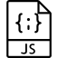

Introduction
In this tutorial I will be showing you how to use JavaScript to display the current date, local time, as well as local time in AM/PM format on your website. By default, JavaScript displays the time in 24 hour time format so it will have to be converted to AM/PM format. I will be combining HTML, CSS, and JavaScript in order to demonstrate this tutorial and use the jQuery library for help.
Before we begin, please remember to include the jQuery library shown below that is hosted by Google, at the end of your HTML file just before the closing body tag and above your other JavaScript files. Click on each of the tabs to view the tutorials.
<script src="https://ajax.googleapis.com/ajax/libs/jquery/3.1.1/jquery.min.js"></script>1. Display the Current Date

<!-- Make a div to display the date. -->
<div class="date"></div>

/* Style it however you want... */
.date {
border-radius: 4px;
box-shadow: 4px 4px 0 0 #343434,
3px 3px 0 0 #343434,
2px 2px 0 0 #343434,
1px 1px 0 0 #343434,
0 0 0 0 #343434;
border: 1px solid #343434;
width: 200px;
margin: 0 auto;
font-size: 2em;
text-align: center;
}

// Follow the Javascript steps below
// Call function
date();
function date() {
// Get user's local date
var currentDate = new Date();
// Set the date in variables
day = currentDate.getDate();
month = currentDate.getMonth() + 1;
year = currentDate.getFullYear();
// Output the date
$('.date').text(day + "/" + month + "/" + year);
}
2. Display the Local Time (24 Hr)
<!-- Create a div to display the local time. -->
<div class="time"></div>
/* Style it however you want... */
.time {
box-shadow: 0 0 0 6px #333;
width: 180px;
margin: 0 auto;
font-size: 2em;
text-align: center;
color: white;
background-image: url(../images/bg.png);
}
// Follow the Javascript steps below
// Call function
time();
function time() {
// Get user's local time
var today = new Date();
// Set the time in variables
var h = today.getHours();
var m = today.getMinutes();
var s = today.getSeconds();
m = checkTime(m);
s = checkTime(s);
// Output time
$('.time').text(h + ":" + m + ":" + s );
// Update clock by repeating function every 500 milliseconds
var t = setTimeout(time, 500);
}
// Add leading zero infront of numbers < 10
function checkTime(i) {
if (i < 10) {i = "0" + i};
return i;
}
3. Display the Local Time (12 HR) in AM/PM
<!-- Create a div to display the local time. -->
<div class="clock"></div>
/* Style it however you want... */
.clock {
box-shadow: 0 0 0 1px grey;
width: 300px;
margin: 0 auto;
border-radius: 30px;
font-size: 3em;
text-align: center;
color: black;
font-family: monospace;
}
// Follow the Javascript steps below
// Call function
clock();
function clock(){
// Get user's local time
var currentTime = new Date();
// Set the time in variables
hours = currentTime.getHours(),
minutes = currentTime.getMinutes();
seconds = currentTime.getSeconds();
// Add leading zero infront of numbers < 10
if (minutes < 10) {
minutes = "0" + minutes;
}
// Add the suffix and display in 12 hr format
var suffix = "AM";
if (hours >= 12) {
suffix = "PM";
hours = hours - 12;
}
if (hours == 0) {
hours = 12;
}
// Output time
$('.clock').text(hours + ":" + minutes + " " + suffix );
}